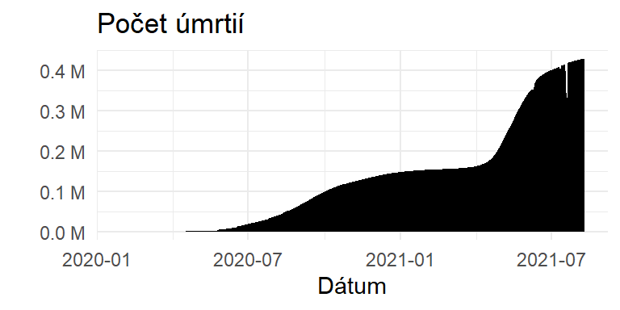

Covid 19 Analýza
Úvod do Problematiky
Pandémia COVID-19 mala významný vplyv na Indiu, pričom táto krajina (ako aj ostatné krajiny) zaznamenala veľký počet prípadov a úmrtí v dôsledku vírusu. Vzniklo obrovské množstvo údajov, ktoré taktiež nemusia súvisieť s vírusom samotným ale s aspektami každodenného života, obsahujúce napríklad dáta o ovzduší, vzdelávaní alebo ekonomií. Tieto dáta umožnili výskumníkom, analytikom a vedcom údajov získať prehľad a pochopiť vplyv vírusu na spoločnosť. V tomto projekte budú predstavené súbory údajov a ich následna analýza.
Analýza dát a hypotézy
Datasety sú verejné a ľahko dostupné na internete a obsahujú informácie o potvrdených prípadoch, úmrtiach, testovaní, hospitalizáciách, očkovaniach a iných relevantných premenných na rôznych geografických úrovniach, ako sú globálne, a regionálne. Analýza týchto súborov údajov nám môže ukázať sledovať šírenie vírusu, identifikovať trendy a prispôsobiť dôležité rozhodnutia na základe týchto faktov. Zozbierané dáta sú z časového úseku január 2020 až Máj 2021, čiže vieme aj overiť, či boli naše pozorovania vývoju pandémie pravdivé alebo nie.
Demografia
Uttar Pradesh
Uttar Pradesh je krajina s najväčšou populáciou s počtom 200 miliónov ľudí. Keďže je to oblasť s vysoko kvalitnou pôdou a ekonomicky výhodnými podmienkami pre obyvateľov, aj hustota populácie je zo všetkých štátov v Indií najväčšia, čo znamená, že mestské oblasti sú náchylnejšie na šírenie a prenosu vírusu.1 Môžeme si všimnúť, že počet vakcinovaných ľudí je tiež najväčší, ale v tabuľke počtu nakazených ľudí je na šiestej priečke, kde bolo nakazených 1,7 milióna ľudí, čo sa rovná 7% celkovej populácie štátu. 2
1 Kopf, Dan; Varathan, Preeti (11 October 2017). “If Uttar Pradesh were a country”. Quartz India. Archived from the original on 22 June 2019. Retrieved 20 May 2019.
2 “Agriculture” (PDF). www.niti.gov.in. NITI Aayog. Retrieved 19 October 2021.
Krajina obdržala najväčší počet dávok vakcín - približne 300 miliónov, čo je vzhľadom na počet obyvateľov 130%, čiže väčšina obyvateľstva bola zaočkovaná a preto sa vírus v tejto krajine nešíril ako by sa predpokladalo.


Maharashtra
Na druhej strane krajina s najväčším počtom potvrdených prípadov je Maharashtra, ktorá podobne ako Uttar Pradesh má veľkú hustotu obyvateľstva, počet dávok je rovnako vysoko, okolo 125%. Mumbai, hlavné mesto Maharashtra, je najobývanejšie mesto v Indií s počtom obyvateľstva 20 miliónov. V centre sa nachádza taktiež najväčšie a najrušnejšie letisko Indie,Chhatrapati Shivaji Maharaj, s ročným obratom ľudí 48 miliónov, čiže potenciál šírenia vírus je veľmi vysoký. Taktiež ľudia krajiny neboli oboznámení resp. nedodržiavali aktuálne protipandemicke opatrenia, keďže veľká časť obyvateľstva sú migrujúcich pracovníkov, ktorí prichádzajú z iných častí Indie za lepšími podmienkami.3
3 Bertaud, A. (2011). Mumbai’s ill conceived Malthusian approach to development.
Aj keď počet vakcinovaných ľudí bol relatívne vysoký, celkový počet potvrdených prípadov bolo až 6,4 milióna, čo tvorilo 4% populácie Maharashtra.
Vývoj všetkých ochorenia



Počet potvrdených prípadov sa na konci analyzovaných dát vyšplhal až na 32 miliónov, kde 31.5 miliónov bol úspešne vyliečených a okolo 500.000 bolo úmrtí. Ako môžeme vidieť na grafoch vedľa, počas prvej vlny, čiže od začiatku 2020 až do Marca 2021 bolo prípadov relatívne malé množstvo. Napriek tomu boli nemocnice v Indii plné a snažili sa vysporiadať s vyvýjajúci tlakom z narastajúcich prípadov a ošetriť čo najviac pacientov.
Indická vláda prijala niekoľko opatrení na zvýšenie kapacity nemocníc vrátane zriadenia dočasných centier starostlivosti o COVID-19 a premeny hotelov a štadiónov na izolačné zariadenia. Nemocnice tiež zaviedli prísne opatrenia na kontrolu infekcie, aby zabránili šíreniu vírusu, ako je izolácia pacientov s COVID-19, používanie osobných ochranných prostriedkov (OOP) a zvýšenie frekvencie čistenia a dezinfekcie. Prudký nárast prípadov COVID-19 v Indii viedol k nedostatku lekárskeho kyslíka, ktorý je nevyhnutný na liečbu závažných prípadov ochorenia. Nemocnice sa snažia zabezpečiť dostatok kyslíka na uspokojenie dopytu, čo viedlo ku kríze verejného zdravia, preto Indická vláda podnikla kroky na riešenie nedostatku kyslíka, ako je zvýšenie výroby a dovoz kyslíka z iných krajín avšak niektorých častiach krajiny bola situácia naďalej kritická.4
4 Kapoor, Suraj. “COVID-19 pandemic response by India and future directions.” Journal of Public Health and Primary Care 3 (2022): 56 - 62., Available from: http://www.jphpc.org/text.asp?2022/3/3/56/354819
Počas druhej vlny , čiže v období od Marca 2021 do Mája 2021 prudko narástol počet prípadov a úmrtí. Nárast prípadov zaplavil systém zdravotnej starostlivosti, pričom nemocniciam došli postele, kyslík a ďalšie nevyhnutné zásoby. Indická vláda zaviedla blokády a iné obmedzenia,ako pokus o kontrolu šírenia vírusu, ale opatrenia boli kritizované za to, že sú príliš malé a príliš neskoro. Nárast prípadov bol pripísaný aj faktorom, ako sú veľké zhromaždenia, politické zhromaždenia a náboženské udalosti, ktoré sa mohli konať napriek riziku šírenia vírusu.5
5 Anand, Abhishek et al. “Three New Estimates of India’s All-Cause Excess Mortality during the COVID-19 Pandemic.” (2021).
Analýza očkovania a vplyv pohlavia na úmrtnosť

Ako sa dá vyčítať z grafov, rozdiel medzi pohlaviami je až 7 percent, čo je na prvý pohľad prirodzené. Ale z faktu, že v tomto období bol pomer mužov:žien 1000:1020, čiže žien v Indií je väčšie množstvo žien ako mužov. 6
6 https://www.bbc.com/news/world-asia-india-59428011
Ženy často váhali nad prijatím očkovania z rôznych dôvodov: slabá znalosť očkovania, nedostatočná pozornosť zo strany zdravotníckych pracovníkov, informovanie sa z nespoľahlivých zdrojov a mylné predstavy o vedľajších účinkoch vakcín. Obavy o bezpečnosť a účinnosť vakcín vrátane obáv z neznámych dlhodobých účinkov, súvisiace s tehotenstvom atď..7
7 Massimi, A., Rosso, A., Marzuillo, C., Prencipe, G., Soccio, P.D., Adamo, G., Sturabotti, G., Vacchio, M.R., Vito, C.D., & Villari, P. (2017). Childhood vaccinations. Validation of a tool for measuring knowledge, attitudes and vaccine hesitancy in pregnant women. Epidemiology, Biostatistics, and Public Health.
Štúdia zistila, že biologické pohlavie taktiež ovplyvňuje výsledky nakazenia, pričom muži majú väčšiu komorbiditu a vyššiu úmrtnosť ako ženy, ktoré namiesto toho zaznamenali viac postihnutia a dlhšie prežitie. Ďalšia štúdia zistila, že mužské pohlavie bolo hlavným prediktorom prijatia na jednotku intenzívnej starostlivosti (JIS) v dôsledku infekcie spolu s prítomnosťou obezity, chronického ochorenia obličiek a hypertenzie.